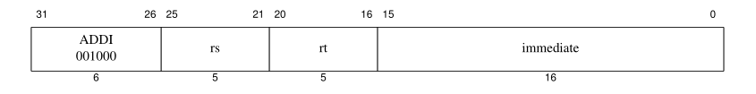
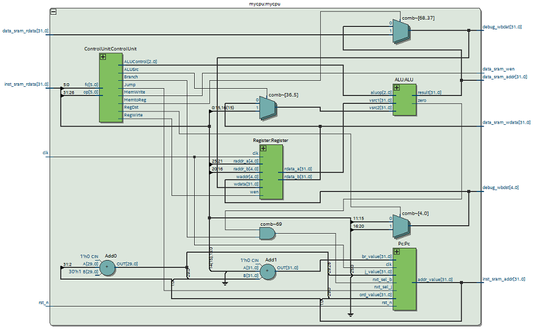

敲黑板！划重点！超详细的！你不会就真的说不过去！
---前排告示---
1.需要熟悉 Verilog Hdl 编程语言。2.需要熟悉 MIPS ISA 。
3.需要熟悉 Quartus 工具以及代码编辑器(如VsCode)。
4.本 CPU 不涉及 CP0 ，即不考虑例外与中断。
---特殊说明---
语法方面，本 CPU 主要使用 assign 语法替代 if-else 和 case 。(借鉴来源：蜂鸟E200处理器)这是由于语法 Verilog 中的 if-else 和 case 语法存在两大缺点。
1) 不能传播不定态。
2) 会产生优先级 的选择电路而非并行选择电路，从而不利于时序和面积。
由于上述原因，在需要使用寄存器的地方，特别的模块化了三个寄存器模块。
1) gnrl_dffl:带有 load-enable 使能，不带有 reset 的寄存器。>>>gnrl_dffl.v
2) gnrl_dfflr:带有 load-enable 使能，带有异步 reset ，复位默认值为 0 的寄存器。>>>gnrl_dfflr.v
3) gnrl_dffr:不带有 load-enable 使能，带有异步 reset ，复位默认值为 0 的寄存器。>>>gnrl_dffr.v
第一部分 指令集
先介绍一下指令，实现的指令有：add、sub、addi、and、or、slt、 sw、lw、beq 、j 10条指令。如上图所示所有指令长度均为32比特。本CPU实现的指令的格式均为寄存器型(R-Type)、立即数型(I-Type)和跳转型(J-Type)三种类型中的一种。下面逐一介绍 10 条指令的格式和功能描述。
ADD
汇编格式：ADD rd, rs, rt
功能描述：将寄存器 rs 的值与寄存器 rt 的值相加，结果写入寄存器 rd 中。
SUB
汇编格式：SUB rd, rs, rt
功能描述：将寄存器 rs 的值与寄存器 rt 的值相减，结果写入 rd 寄存器中。
ADDI 
汇编格式：ADDI rt, rs, imm
功能描述：将寄存器 rs 的值与有符号扩展至 32 位的立即数 imm 相加，结果写入 rt 寄存器中。
AND
汇编格式：AND rd, rs, rt
功能描述：寄存器 rs 中的值与寄存器 rt中的值按位逻辑与，结果写入寄存器 rd 中。
OR
汇编格式：OR rd, rs, rt
功能描述：寄存器 rs 中的值与寄存器 rt中的值按位逻辑或，结果写入寄存器 rd 中。
SLT
汇编格式：SLT rd, rt, rs
功能描述：将寄存器 rs 的值与寄存器 rt 中的值进行有符号数比较，如果寄存器 rs 中的值小，则寄存器 rd 置 1；否则寄存器 rd置 0。
SW
汇编格式：SW rt, offset(base)
功能描述：将 base 寄存器的值加上符号扩展后的立即数 offset 得到访存的地址,据此虚地址将 rt 寄存器存入存储器中。
LW
汇编格式：LW rt, offset(base)
功能描述：将 base 寄存器的值加上符号扩展后的立即数 offset 得到访存的地址，据此地址从存储器中读取连续 4 个字节的值，写入到 rt 寄存器中。
BEQ
汇编格式：BEQ rs, rt, offset
功能描述：如果寄存器 rs 的值等于寄存器 rt 的值则转移，否则顺序执行。转移目标由立即数 offset 左移 2 位并进行有符号扩展的值加上该分支指令对应的延迟槽指令的 PC 计算得到。
J
汇编格式：J target
功能描述：无条件跳转。跳转目标由该分支指令对应的延迟槽指令的 PC 的最高 4 位与立即数 instr_index 左移 2 位后的值拼接得到。
第二部分 架构实现
知道了指令集和指令格式之后，接下来了解 CPU 架构。以经典五级流水线 CPU 为例，一条指令的执行需要经过至多五个操作，分别是取指、译码、执行、访存、回写，而单周期指令 CPU 也是需要经历这五步，只是一条指令在一个时钟周期内就完成。所以我们就可以知道了每个部分都需要那些模块。取值：程序计数器(PC)、指令存储器(Instmem)
译码：主控制器(Control)、译码器(Decode)
执行：运算器(ALU)
访存：数据存储器(Datamem)
回写：寄存器堆(regfile)
接下来，我们就可以根据所需实现指令就可以画出数据通路和控制通路。如下图，当然，我们只要知道了对应模块具体的功能和如何实现，那么我们面对所有的已提供数据通路的 CPU 框架图，都可以直接开始实现该 CPU。
从左至右依次实现每个模块。这里需要说明一下，数据和指令存储器实际实现的时候是不包含在 CPU 里的，这里的图解架构是为了更好的体现其位置和易于理解。
PC
PC 模块的功能是给出 CPU 取值时所需要的地址，在本 CPU 中，实现了 BEQ 和 J 指令，所以输入端除开顺序执行的 PC 值之外还应有两个跳转指令的 PC 值输入以及对应的控制选择信号。接下来就是主要代码的。PC 的功能很单一，即只需要判断从哪一个来源选择并在每个时钟到来的时候进行输出即可。这里通过一个三目运算符选择判断，当 nxt_sel_b 为 1 时，选择 br_value；当 nxt_sel_j 为 1 时，选择 j_value ，否则选择 ord_value 即表示顺序执行。

然后我们通过 gnrl_dffr 模块将次地址值输出，这样 PC 模块就完成了。
下面是 PC 模块代码
ControlUnit
主控制器完成的功能是通过对指令的解码，分析得到该指令对应的控制信号并输出给各个模块从而使得该指令能够正确执行。首先，我们通过第一部分的指令类型就可以知道，根据前 6 位的操作码 opcode 和后 6 位的功能码 function 就可以判断出对应的指令。所以先通过这个来判断指令，代码如下，以 add 指令为例，若 opcode = 000000 且 fc = 100000 那么这条指令就是 add 指令，同时 add_req 信号就会为1。
然后我们再对每个信号做出判断。根据每个信号功能的不同对应的信号也是不一样的。
MemtoReg 信号，只有 lw 指令会需要将数据存储器的值回写到寄存器中，所以当且仅当指令为 lw 指令时该信号为1。
MemWrite 信号，只有 sw 指令会将寄存器中的值写入到数据存储器中，所以当且仅当指令为 sw 指令时该信号为1。
Branch 信号，指令 beq 的判断信号，提供给 PC 用以判断是否需要进行该跳转，当且仅当指令为 beq 指令时该信号为1。
Jump 信号，指令 j 的判断信号，提供给 PC 用以判断是否需要进行该跳转，当且仅当指令为 j 指令时该信号为1。
ALUSrc 信号，只有 addi sw lw 三条指令需要使用立即数在ALU内进行操作。当指令为这三条指令其一时该信号为1。
RegDst 信号，由于 addi sw lw 三条指令的结构，回写寄存器索引位置也不同，当指令为这三条指令其一时该信号为1。
RegWirte 信号，指令中 sw beq j 三条指令不需要回写寄存器，当指令为这三条指令其一时该信号为0。

最后我们还需要提供进入 ALU 之后需要的操作是什么运算，所以还需要进行一个操作判断。具体的操作类型在 ALU 模块中给出。
下面是 Control 模块代码
Regfile
寄存器，是 CPU 中的一个寄存器堆，一共有 32 个。寄存器需要注意的地方就是，在 MIPS 架构中规定 0 号寄存器输出始终为 0 ，写该寄存器不对其有影响。这里给出两种寄存器的实现方法，注释的部分代码为实现方法一，这样的实现方法通俗易懂，也更直观的展现其性质。
ALU
ALU 是 CPU 核心的部件，进行操作数的运算，然后输出结果供其他部分使用。根据需要实现的指令，我们在进行操作之前还需要判断是何种操作。ALU 的操作分为了以下几个操作，分别是加、减、与、或、比较。这里不难看出这几个操作对应的指令分别是 add sub and or slt 指令，对于剩下的指令我们分别说明。
addi: 该指令是 add 指令的变体，所以使用加操作。
sw lw: 两条指令 需要 ALU 模块计算出相对应的地址，所以使用加操作。
j: 该指令是无条件跳转，所以不进入 ALU 模块进行相关操作。
beq: 该指令是判断两个操作数是否相等，本 CPU 使用减操作。(对于实现其实有两种，一是操作数相减，二是操作数相或，结果为 0 则表示相等)
接下来就是将输入的两个操作数进行运算。
最后进行选择输出，下面的这种选择器实现方法是很好用的一种，它不会存在优先级。建议运用该方法在不需要优先级的选择时使用。
下面是ALU模块代码
那么，至此呢整个 CPU 的主要模块就已经实现了(除指令、数据存储器)。接下来就需要实现 CPU 的顶层，即对各个模块进行封装和连接，并且将剩余的数据通路和控制逻辑完善。
看到这里可能会有些疑惑，例如移位模块、Add 模块、二选一多路选择器等模块还未介绍和实现。是的，一般都会将这些模块进行封装，并且还可以复用，使得其调用非常方便。但我们也可以直接将其中的代码语句至于顶层逻辑之中，原因是，对于本 CPU 这些模块逻辑非常简单，特别是数据扩展模块，只需要一种符号扩展。再者，这样可以减少信号以及模块的例化和多的命名等。(其实你说是偷懒也不是不可以，哈哈哈)
逐一解释一下，前 6 行代码是将从指令存储器取得的指令进行拆分。
接下来 4 行代码分别是顺序地址、j指令跳转地址、beq 指令地址，花括号表示的是将逗号分隔的数据进行拼接，这个拼接结果具体的参考第一部分相关指令描述。结构图中的2位移位器已经在其中完成了。
再接下来 1 行代码是寄存器回写索引号选择。
然后 1 行是 16 位立即数的符号位扩展。
再 1 行就是对进入 ALU 的数据选择，是使用寄存器输出还是立即数。
最后这 1 行是对寄存器回写数据做出判断。
这里需要注意的地方是这个三目运算符的使用，当 ? 前的判断值为 1 时，选择的值时 ： 前的值，否则是后值。还有就是关于 wire 后直接跟着逻辑语句，这个写法其实是一个隐式语句，就是将 wire assign 两个语句结合在一起实现。
下面是 CPU 顶层代码。
这里输出输入信号意思如名很容易理解，因为指令、数据存储器并不在这个顶层所以需要将相关信号拉出由外部输入，对外部输出。对照 CPU 结构图可以很清晰的看出相关信号。最后在 Quartus 软件中可以得到对应的 RTL 图。

第三部分 测试
前面第二部分，我们就已经将 CPU 整体实现了，现在就已经可以仿真测试功能了。下面给出了一段汇编代码，我们根据这段汇编代码，将指令写入数据存储器中，然后使用 Testbench 文件进行仿真，对照 ModelSim 的仿真图查看信号值。Assembly Descript1on Address Machine
main： addi $2, $0, 5 # $2 = 5 0 20020005
addi $3, $0, 12 # $3 = 12 4 2003000C
addi $7, $3, -9 # $7 = 3 8 2067fff7
or $4, $7, $2 # $4 = 7 C 00e22025
and $5, $3, $4 # $5 = -4 10 00642824
add $5, $5, $4 # $5 = 11 14 00a42820
beq $5, $7, end # Not executed 18 10a7000a
slt $4, $3, $4 # $4 = 0 1C 0064202a
beq $4, $0, around # Executed 20 10800001
addi $5, $0, 0 # Not happen 24 20050000
around： slt $4, $7, $2 # $4 = 1 28 00e2202a
add $7, $4, $5 # $7 = 12 2C 00853820
sub $7, $7, $2 # $7 = 7 30 00e23822
sw $7, 68($3) # [80] = 7 34 ac670044
lw $2, 80($0) # $2 = [80] = 7 38 8C020050
J end # Executed 3C 08000011
addi $2, $0, 1 # Not happen 40 20020001
end： sw $2, 84($0) # [84] = 7 44 ac020054
下面分别给出指令存储器和数据存储器的实现代码，难的地方只在于指令存储器中 $readmemh 的使用，这里需要提供的是 16 进制文件。>>>ins.txt
实际上在 Testbench 中例化多个模块是不太合适的，ModelSim 也是无法解析的。所以还需要在对 CPU、Instmem、Datamem 三个模块再用一个顶层进行封装，如下图。
至此一个完整的 CPU 就已经成型了，接下来就是编写 Testbench 进行仿真测试了。下图中的 Testbench 主体分为四个部分，首先是对 core 进行例化，这也是常说的 DUT。然后的三个 initial 语句分别是提供时钟，自动化校验和控制运行。再自动校验部分使用的是 wait 语句和 $display 功能是当等待到括号能条件成立时执行显示语句，将对应语句显示在屏幕上。
简单介绍一下仿真的流程。在 Quartus 中完成工程创建，编译通过之后，需要按照下面的流程给该工程添加 Testbench 文件。
还需要的步骤是将 ModelSim 工具的文件目录按照步骤进行添加。另外工具栏中的 RTL simulation 按钮也需要主动勾选显示。
当你完成以上步骤之后，点击 RTL simulation 按钮就会开启仿真并转跳至 ModelSim 工具页面。简单的运行之后，当我们看到 ModelSim 的波形图和信息栏中显示显示如下，说明 CPU 运行上述汇编代码完全正确，也就是 CPU 功能验证通过！恭喜你完成了一个简单的单周期 CPU 的设计与实现！

第四部分 疑难杂症
有什么问题其实都忘了。记住 Rst 信号，当时使用的是 negedge 时，一定注意高低电平，不然可能会出现 PC 爬不起来(一生之敌啊，总是会莫名其妙遇到它跑不了)。在该 CPU 中所有的寄存器都没有初值，所以 Testbench 中一定需要有一个模拟按键过程，不然也会出现仿真全红。如果有其它问题或者项目都可以找我，如果你想打赏一下的话点一下下面的按钮，你懂的~。